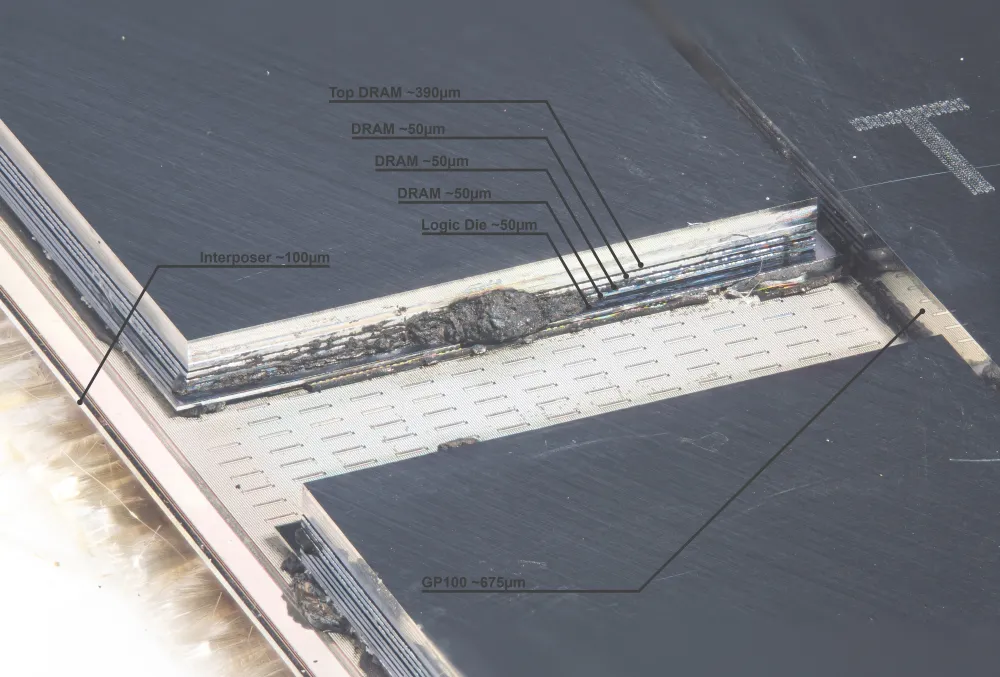
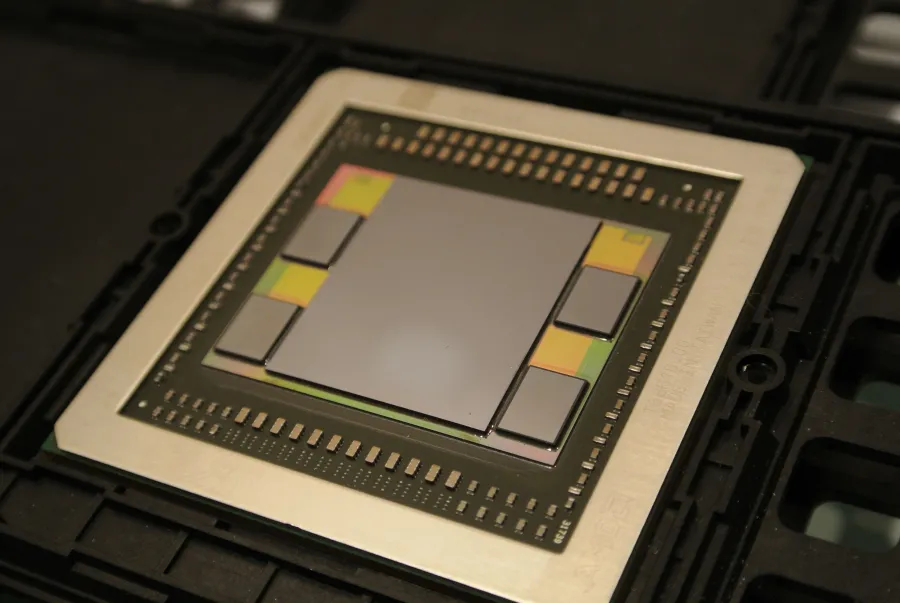

Memory technology: HBM, GDDR, SRAM, capacity against bandwidth, the KV cache
Each rung further from the arithmetic holds more and delivers less: one H100 server, drawn from the die outward (Fig. 1). For each rung the ceiling is bandwidth / 16.06 GB of BF16 weights of Llama 3.1 8B: at batch 1 every weight is read once per token, so this is the fastest that rung could ever serve the model, in tokens per second derived.
- SRAM on the die. Registers, L1, shared memory and L2 together: 119 MB, a few tens of cycles away and the fastest of all. It does not fit 16 GB of weights, so it holds tiles, not models (section 3).
- HBM3, beside the die. 5 stacks on a silicon interposer, millimetres away: 80 GB at 3,350 GB/s. Ceiling 209 tokens per second. The dense, fast stream: this is the rung models are served from.
- Host DRAM over PCIe. On the CPU's side of the board: terabytes per server, reached over PCIe Gen5 x16 at 64 GB/s each way. Ceiling 4.0.
- CXL memory. An expander or pool reached over PCIe wires, through the host: an x8 port is about one DDR5-4800 channel, 38.4 GB/s, and adds about 70 ns. Ceiling 2.4.
- Another node's memory. Over a 400 Gb/s NIC, metres away: 50 GB/s. Ceiling 3.1.
- NVMe SSD. Flash on PCIe: terabytes, at 5.76 GB/s sequential on this laptop, measured. Ceiling 0.36.
- The whole ladder. Each stream's dot count follows the log of its bandwidth. Only HBM is fast enough to serve from; the lower rungs are for state that waits (section 7).
Sources: H100 HBM, the SRAM total and PCIe in sections 3 and 4; CXL from Li et al., Pond, ASPLOS 2023 (DDR5-4800 channel = 4,800 MT/s × 8 bytes, derived); the NIC from the Llama 3 paper; the SSD measured here. Positions, sizes and the number of DIMMs are illustrative; the numbers in the labels are not.
You need nothing beyond what an ML engineer knows; the intuition is in the parent Topic: hardware (section 3) and the roofline in Performance math. The running example is the parent's: Llama 3.1 8B (16.06 GB of BF16 weights), on an H100 and on this laptop's Apple M1 Pro GPU, where everything marked measured here was run. How a CUDA programmer uses the hierarchy (coalescing, tiling, banks) is GPU memory hierarchy; sizing the KV cache of any model is Long context.
New terms
Reference: the memories an ML engineer meets, in one table
| Memory | What stores a bit | Where it sits | Bandwidth | Capacity | Used for |
|---|---|---|---|---|---|
| Registers, L1, shared memory, L2 (SRAM) | 6 transistors, no refresh | on the processor die | highest; tens of PB/s summed over a wafer (Cerebras WSE-3: 21 PB/s) | H100: about 119 MB in all | the operands of the next instructions; tiles of a matmul |
| HBM3, HBM3e, HBM4 | 1 transistor + 1 capacitor (DRAM) | stacks of DRAM dies beside the GPU, on a silicon interposer | 819 / 1,229 / 2,048 GB/s per stack at the standard pin rate | 80 to 288 GB per GPU | weights, activations, optimizer state, KV cache |
| GDDR7 | DRAM | separate chips around the GPU on the board | RTX 5090: 1,792 GB/s | 32 GB (RTX 5090) | consumer and workstation GPUs |
| LPDDR5 / LPDDR5X | DRAM | in the processor package or beside it, shared by CPU and GPU | M1 Pro: 200 GB/s (127 to 165 measured) | 16 GB here; 17 TB in a GB200 NVL72 rack's Grace CPUs | Apple GPUs; the CPU side of Grace superchips |
| Host DRAM over PCIe | DRAM (DDR5) | on the CPU's side of a PCIe link | PCIe Gen5 x16: 64 GB/s each way | terabytes per server (a DGX B200 has 2 TB, configurable to 4 TB: NVIDIA) | offloaded optimizer state, KV cache, weights |
| CXL memory | DRAM (DDR5) behind a CXL controller | an expander card or a shared pool, over PCIe wires | x8 port: about one DDR5-4800 channel | pooled across 8 to 16 sockets | cheaper capacity for CPU servers; not a GPU tier yet |
| NVMe SSD | NAND flash | on PCIe | this laptop: 5.8 GB/s sequential | terabytes | checkpoints, datasets, last-resort offload |
Sources, all fetched 2026-10-05 unless marked: per-stack HBM figures from Rambus's HBM table (updated March 4, 2026); Cerebras WSE-3, RTX Blackwell whitepaper, Apple M1 Pro, GB200 NVL72, H100 (PCIe Gen5 128 GB/s both directions) vendor spec; CXL from Pond (fetched 2026-10-23); the H100 on-chip total is derived in section 3; the laptop figures measured here.
1. Why memory, not arithmetic, decides
A multiply needs two numbers already in registers; fetching them from DRAM takes hundreds of nanoseconds and far more energy than the multiply. And each generation adds arithmetic faster than memory: over 20 years of server hardware peak FLOPS grew 3.0× every two years, DRAM bandwidth 1.6× and interconnect bandwidth 1.4× (Gholami et al., AI and Memory Wall, IEEE Micro 2024, Figure 1) independent study. They call it the memory wall. NVIDIA's flagships since the A100, three views of the same six chips (right).
From the A100 (2020) to Rubin (2026), dense BF16 arithmetic grew 12.8× and HBM bandwidth 10.8×: NVIDIA kept bandwidth roughly in step, at a price in wires, power and supply (sections 4 and 8). Capacity grew only 3.6× (80 GB to 288 GB) while the largest models grew from billions to a trillion parameters, because a stack can only be so tall and only so many stacks fit around one die (section 5). So the everyday memory question is "does it fit?", and sharding (ZeRO, FSDP, tensor parallelism) and offload exist to answer it.
The roofline and ridge point for every chip: the parent's Roofline lab and Chip atlas; FLOPs and bytes per step derived: Performance math.
Arithmetic outgrew bandwidth, and both outgrew capacity
Open one row and stream it, or pay precharge and activate on every read
Each lane is one read of 64 bytes: precharge, activate, column read, data burst, drawn to one time scale for all three orders. The strip on top shows which row each bank holds open.
2. A DRAM cell, a row, a bank: why order matters and bandwidth costs power
The cell. DRAM (dynamic random-access memory) stores one bit as charge on a microscopic capacitor, reached through one transistor (Wikipedia, DRAM): dense and cheap. The charge leaks, so every row must be refreshed (read and rewritten) within a fixed interval, 64 ms for DDR2 and half that above 85 °C case temperature (Wikipedia, Memory refresh).
The array. An activate connects a whole row of capacitors to sense amplifiers, which amplify the tiny voltages to full 0s and 1s and hold them: the row buffer (reading drains the capacitors, so the amplifiers write the values back while the row is open). A read then picks a few columns and sends them out in a burst. Opening another row first needs a precharge to close this one. A chip has several independent banks, each with its own row buffer, so one bank can activate while another sends data. In HBM2 a row is 1 KB (O'Connor et al., MICRO 2017). So the cost of a read depends on what was read before it. The same 16 reads of 64 bytes, in three orders (pick one above the timeline):
The same 16 reads, step by step
- Sequential: one row. Sixteen reads of 64 bytes, 1 KB in all, every one from the same 1 KB row of one bank.
- Read 1: open the row. The bank is idle: activate the row (14 ns), read the column (14 ns), send the burst (2 ns). Data is out at 30 ns.
- Read 2: a row hit. The row is already in the row buffer: only a column read and a burst, pipelined behind the first. Done at 32 ns.
- Reads 3 to 8. Every read hits the open row, so the bursts follow one another on the bus every 2 ns: 44 ns.
- Reads 9 to 16. Done after 60 ns: one activate, 1 KB opened for 1 KB used, 17.07 GB/s from this one bank and bus.
- Random: one bank. The same sixteen reads, now to 16 different rows of one bank.
- Read 1: open a row. As before: activate, column read, burst. Data is out at 30 ns.
- Read 2: a row miss. Another row is open: precharge it (14 ns), activate the new row (14 ns), then read (14 ns) and send the burst. Done at 74 ns, 44 ns for one read.
- Reads 3 to 8. Every read pays precharge and activate again, and nothing overlaps: 338 ns.
- Reads 9 to 16. Done after 690 ns: 16 activates opened 16 KB of rows to use 1 KB, 1.48 GB/s, eleven times slower than sequential.
- Random: 16 banks. The same sixteen rows, now spread over 16 banks, one read each.
- Read 1: open a row. Activate, column read, burst: 30 ns.
- Read 2: another bank. Bank 1 is idle, so its activate starts 4 ns after the first (the gap between activates to different banks), overlapping read 1. Done at 34 ns.
- Reads 3 to 8. An activate every 4 ns, each in its own bank; only the data bus is shared: 58 ns.
- Reads 9 to 16. Done after 90 ns: still 16 KB of rows opened (the energy is spent), but the time is hidden, 11.38 GB/s, two thirds of sequential.
Random reads into one bank pay precharge plus activate every time and open 16 KB of rows to use 1 KB. Spreading them over many banks hides most of that, which is why memory controllers interleave consecutive addresses across banks and channels, and why a GPU wants many independent requests in flight.
Timings are illustrative DDR-class values (activate to read 14 ns, read to data 14 ns, precharge 14 ns, 2 ns per 64-byte burst, 4 ns between activates to different banks), not those of a specific part; the 1 KB row is HBM2's. illustrative The order of the three results does not depend on the exact values: 60 ns, 690 ns and 90 ns here, checked against a Python reference (code/build_data.py).
Measured on this laptop: 512 MB of the M1 Pro GPU's memory read in random blocks. Blocks of 16 bytes delivered 5.5 GB/s of useful data, 128-byte blocks 40.7 GB/s, 4 KB blocks 142.9 GB/s, close to the sequential rate measured here.
The GPU fetches whole cache lines, so a 16-byte read costs as much as a 128-byte one. That is the hardware fact behind coalescing (how a kernel arranges its loads to use whole lines: GPU memory hierarchy, section 1) and behind serving engines storing the KV cache in blocks of many tokens (section 6).
Below one 128-byte line, a smaller read costs the same time: useful bandwidth falls in proportion
Why bandwidth costs power
Mark Horowitz's widely used 45 nm energy table, as reprinted by Han et al. (2015), Figure 1: reading 32 bits from off-chip DRAM costs 640 pJ, a 32-bit float multiply 3.7 pJ, 173 times more (right).
The arithmetic is cheap; the wire is not. In stacked HBM2 a bit cost about 3.92 pJ: 1.21 pJ to activate rows, 2.24 pJ to move the bits across the DRAM die and down the through-silicon vias, about 0.3 pJ for the short interposer wires, the rest error correction; off-board GDDR5 cost about 14.0 pJ per bit (O'Connor et al. 2017, Figure 1 and section 2) published measurement model. At 3.92 pJ per bit an H100 reading at its full 3.35 TB/s would spend 3.35 × 1012 × 8 × 3.92 pJ = 105 W on memory alone, and Rubin's 22 TB/s would spend 690 W derived, illustrative, so HBM3 and HBM4 must cost less per bit than HBM2 for Rubin to exist (SK hynix claims more than 40% better power efficiency for HBM4, section 8). One token of Llama 3.1 8B at batch 1 reads 16.06 GB of weights: about 0.50 J per token just to move them, divided over the batch when batching derived, illustrative.
Each activate opens a 1 KB row even if 32 bytes are wanted, and O'Connor et al. note most GPU workloads use only a small fraction of each activated row, which is why activation energy is a large share. Element-wise kernels (normalisation, activations, optimizer updates) stream every byte once and run at the sequential bandwidth; gathers (embedding lookups, MoE routing, paged KV reads) run at the rate their block size allows. Check: Nsight Compute's DRAM throughput against the device peak, and sectors per request (many 32-byte sectors per request means scattered access).
Fetching 32 bits from DRAM costs 173 multiplies
Energy per operation at 45 nm, log scale (Horowitz, via Han et al. 2015).
3. SRAM and the cache ladder
The cell. SRAM (static RAM) stores a bit in a loop of transistors, typically six (a "6T" cell), that holds its value while power is on: no capacitor, no refresh, built on the processor die itself. Faster than DRAM, but far more silicon per bit (Wikipedia, SRAM), so every megabyte of cache displaces arithmetic: the RTX 5090 carries a 96 MB L2 (RTX Blackwell whitepaper), the H100 50 MB. Every register, L1, shared memory and L2 on a GPU is SRAM.
How much an H100 has. 132 SMs, each with a 256 KB register file and 256 KB of combined L1 and shared memory, plus a 50 MB L2: 34.6 + 34.6 + 50 = 119 MB, 0.149% of its 80 GB of HBM derived (per-SM sizes: CUDA Programming Guide, compute capabilities and the Hopper architecture blog). A matmul kernel's whole job is to keep a tile of each operand in that small memory and reuse it many times before going back to HBM (GPU memory hierarchy shows how).
The ladder, measured on this laptop's GPU, in three runs: all threads reading a buffer of a given size over and over (bytes per second), and one thread chasing random pointers through it, one 128-byte line per hop, so each read waits for the previous one (time per read). The chart on the right switches between the two and a table.
Cache sizes are independent measurements by Philip Turner's metal-benchmarks (L1 8 KB per core, L2 256 KB, SLC 24 MB for the M1 Pro); Apple publishes none. The steps sit near those sizes, not exactly on them (the latency plateau runs to 16 KB and to 1 MB, and random chasing also pays for address translation with 16 KB pages), so the labels are a reading of the curve, not a proof. measured here MLX 0.32.3, load average 6.1 to 7.5 (the laptop was shared).
Little's law ties the two curves together. Bytes in flight = bandwidth × latency. To pull 127.5 GB/s from DRAM when each read takes about 467 ns, the GPU must keep 127.5 × 467 = 60 KB of reads outstanding at all times derived, hundreds of cache lines. One thread gets one line per 467 ns, 0.27 GB/s; that is why GPUs run thousands of threads, and why an H100 at 3.35 TB/s and similar latency needs megabytes in flight. The CUDA root's GPU simulator measured the other side on the same GPU: 138 to 151 GB/s once 8,192 or more threads are in flight.
Bandwidth falls and latency rises in steps as the data outgrows each cache
NVIDIA's ladder has the same shape. Luo et al. measured about 29 cycles for shared memory, 38 to 43 for L1, 262 to 273 for L2 and 466 to 542 for global memory on A100, H800 and RTX 4090 (Benchmarking and Dissecting the Nvidia Hopper GPU Architecture, Table IV) independent measurement.
How the laptop measurements were made, and what transfers to an NVIDIA GPU
Everything marked measured here ran on this laptop: the Apple M1 Pro's 16-core GPU through custom Metal kernels in MLX, and its internal SSD. Each GPU experiment ran 7 timed trials after 2 warm-ups, in three separate runs; lines are the median of the three run medians and bars their spread. Every kernel was checked against NumPy before it was timed. Bandwidth: 65,536 threads, coalesced 16-byte loads. Latency: one thread chasing a random pointer cycle, launch overhead removed by timing two chain lengths and taking the difference; measured up to 512 MB (a chain over 1 GB would not fit beside the bandwidth buffer).
Reproduce: src/run_all.sh (needs a Python with MLX; three GPU runs of about 15 seconds each, then the SSD test and code/build_data.py). Raw outputs in src/out/. The laptop was shared with other jobs during the runs, so single slow trials appear in the spreads.
4. How DRAM is packaged: HBM, GDDR7, LPDDR
All the gigabytes on every GPU are DRAM cells like those in section 2. What differs is how many wires connect them to the processor and how fast each wire runs:
So there are two ways to a lot of bandwidth: very many wires at a modest rate (HBM), or fewer wires at a very high rate (GDDR). Fig. 2 draws both from their published numbers.
- H100: HBM3 beside the die. One GPU die on a silicon interposer with 5 HBM3 stacks around it (a sixth site is unused: GPU architecture): 80 GB, millimetres from the arithmetic.
- Inside one stack. DRAM dies piled on a logic base die and wired vertically by through-silicon vias (8 dies drawn; HBM allows up to 16). Each stack has a 1,024-bit interface.
- The wide, slow bus. 5 × 1,024 = 5,120 wires at 5.23 Gb/s per pin: 5,120 × 5.23 / 8 = 3,350 GB/s. Each lane drawn is 64 wires, and the dots move at the pin rate.
- RTX 5090: GDDR7 around the die. Packaged chips soldered on the board, a 512-bit bus at 28 Gb/s: 512 × 28 / 8 = 1,792 GB/s, and 32 GB. Fewer lanes, longer wires across the board, dots more than five times faster.
- Side by side. HBM is wide, short and slow per pin; GDDR narrow, long and fast. Here HBM gives 1.9× the bandwidth and 2.5× the capacity, and short wires cost less per bit: about 3.92 pJ for HBM2 against 14.0 pJ for GDDR5 in O'Connor et al.'s model (section 2).
H100 and RTX 5090 bandwidth, bus width and RTX 5090 pin rate as published; the H100 pin rate derived from them (the spec-sheet arithmetic below). For comparison, MI300X: 8,192 bits at 5.18 Gb/s per pin, 5.3 TB/s derived. Die sizes, the 8 drawn DRAM dies and the 8 GDDR7 packages (one per 64 bits of bus) are illustrative.

Per stack, bandwidth grew with the rate per pin, and HBM4 doubled the width: HBM3 819 GB/s, HBM3E 1,229 GB/s, HBM4 2,048 GB/s at the standard rates. An H100 SXM carries 5 HBM3 stacks for 3.35 TB/s; Rubin 12-high HBM4 stacks for 22 TB/s (announced).
HBM2E to HBM4E per stack, and reading a spec sheet with the equation
| Generation | Rate per pin | Interface | Per stack | Max stack | Used in (examples) |
|---|---|---|---|---|---|
| HBM2E | 3.6 Gb/s | 1,024 bits | 461 GB/s | 12-high, 36 GB | A100 80GB (2,039 GB/s) |
| HBM3 | 6.4 Gb/s | 1,024 bits | 819 GB/s | 16-high, 64 GB | H100 SXM (5 stacks, 3.35 TB/s), MI300X |
| HBM3E | 9.6 Gb/s | 1,024 bits | 1,229 GB/s | 16-high, 64 GB | H200, B200, B300, MI355X |
| HBM4 | 8.0 Gb/s | 2,048 bits | 2,048 GB/s | 16-high, 64 GB | Rubin (12-high stacks, 22 TB/s, announced) |
| HBM4E | 16.0 Gb/s | 2,048 bits | 4,096 GB/s | 16-high, 64 GB | none shipping |
Per-stack figures: Rambus's HBM table (updated March 4, 2026; standard rates, which shipping parts often exceed); stack counts and chips: H100 via the parent's Chip atlas, Rubin GPU blog (12-Hi stacks, 288 GB, 22 TB/s) vendor spec.
Reading a spec sheet with the equation. H100 SXM: 5 stacks × 1,024 bits = 5,120 bits; 3.35 TB/s × 8 / 5,120 = 5.23 Gb/s per pin, below HBM3's 6.4 standard rate. MI300X: 8,192 bits at 5.3 TB/s = 5.18 Gb/s per pin derived. Rubin's 22 TB/s would need 10.7 HBM4 stacks at the standard 8 Gb/s; with fewer stacks the pins must run faster, consistent with SK hynix's HBM4 running "over 10Gbps" (section 8) derived. NVIDIA does not state Rubin's stack count or pin rate.
The trade. HBM needs stacked, thinned dies with TSVs, a known-good base die, an interposer and advanced packaging capacity; GDDR needs only a board. So datacenter GPUs carry HBM and consumer GPUs GDDR, and an RTX 5090 with 1.79 TB/s is a strong inference card for models that fit in 32 GB and a poor one for models that do not. Check: memory type, bus width and rate are on the datasheet; nvidia-smi -q shows the memory clock and size; the achieved bandwidth is what a stream benchmark reaches (the parent's Roofline lab does this for the M1 Pro).
5. Capacity against bandwidth: the tiers, and CXL
Bandwidth comes from many short wires; capacity comes from many dies. Both compete for the space next to the processor. An HBM stack holds at most 16 dies (64 GB at the standard die size), and each stack needs its own wide interface along the edge of the GPU die, so only so many stacks fit (the two packages on the right).


Going further from the die (board, CPU socket, a CXL device, another node, an SSD) buys capacity cheaply, but the wires get longer, fewer and slower. The hero figure at the top is one server's ladder; the chart on the right shows the rungs across products, each as published (or measured here), on a log scale where every grid step is 10×.
From HBM down to the host link the bandwidth drops about 26× on an H100 (3,350 against 128 GB/s, and that 128 is both directions together), so anything that crosses PCIe once per step must be small or overlapped with compute (section 7). The network to another node (50 GB/s for a 400 Gb/s NIC) is slower again, which is why parallelism is chosen around the network (Interconnects and scaling).
From wafer SRAM to a network link: five orders of magnitude of bandwidth
CXL: memory on PCIe wires
CXL (Compute Express Link) adds a rung between a CPU's own DRAM and the SSD. Its CXL.mem protocol "maps device memory to the system address space": a last-level cache miss to a CXL address becomes a request on a CXL port that brings back the cache line, with no page fault and no DMA. It runs over PCIe's electrical interface with its own low-latency link layer; with PCIe 5.0 a bidirectional x8 CXL port at a 2:1 read:write ratio matches one DDR5-4800 channel (38.4 GB/s, derived). CXL 1.1 attaches a device directly, 2.0 adds switch-based pooling, 3.0 standardises switch-less pooling and more bandwidth. The price is latency: Intel measures 25 ns per round-trip port traversal, about 70 ns end to end over NUMA-local DRAM; a pool shared by 8 to 16 sockets adds 70 to 90 ns, rack-scale pooling more than 180 ns.
Why anyone pays it: in Azure's clusters up to 25% of DRAM was stranded (cores all rented, memory left over), DRAM "can be 50% of server cost", and pooling it over CXL cut DRAM cost by 7% with performance within 1 to 5% of local memory over 158 workloads (Li et al., Pond, ASPLOS 2023, sections 1 and 2) published, Microsoft. For an ML engineer CXL is so far a CPU-side tier: it enlarges host memory, the rung offload uses (section 7), and a GPU reaches it only through the host. The capacity-bandwidth trade is the same at every rung: more bytes, further away, fewer of them per second.
Bandwidth divided by capacity ("full-memory reads per second") for every chip: the parent's section 3; every chip's memory: its Chip atlas.
6. Decode is bound by the bytes it reads
A decode step reads every weight once (shared by the whole batch) and every sequence's KV cache once (not shared), and does about 2 FLOPs per weight per sequence. At small batch the arithmetic is idle and
Llama 3.1 8B on an H100: 16.06 GB / 3.35 TB/s = 4.8 ms, at most 209 steps per second at batch 1 derived. Batching shares the weight read, so tokens per second grow with the batch until the KV reads or the arithmetic take over (the parent's Performance calculator finds that point for any model).
Fig. 3 follows one H100 (80 GB, 3.35 TB/s) serving Llama 3.1 8B: what sits in its memory and what one decode step has to read.
- The weights, read every step. 16.06 GB of BF16 weights, all 32 layers, in 80 GB of HBM. Every step streams all of them to the arithmetic: at least 4.8 ms, at most 209 steps per second.
- One conversation's cache grows. Each of the 32 layers keeps a key and a value plate for every token: 2 × 32 layers × 8 KV heads × 128 × 2 bytes = 128 KiB per token. At 32,768 tokens that is 4.29 GB, a quarter of the weights; the step reads both, 6.08 ms.
- The same conversation at 128K. 131,072 tokens hold 17.18 GB, more than the weights. One step now reads 33.2 GB: 9.92 ms, 101 tokens per second.
- Four conversations at 32K. The same 17.18 GB of cache, so the same 9.92 ms per step, but the weights are read once for all four, and each step makes four tokens: 403 tokens per second.
- Fill the memory. With vLLM's default 92% of 80 GB (73.6 GB) and activations ignored, 13 conversations of 32K fit beside the weights (55.8 GB of cache). One step reads 71.9 GB in 21.5 ms and makes 13 tokens: 606 tokens per second. The cache decides the batch.
All derived from the model's config.json and the H100's published 80 GB and 3.35 TB/s; time per step is the bound in the formula above, so a real step is slower. The layer plates are drawn to the same byte scale as the weights; positions are illustrative.
What else is in memory. Serving needs the weights: 2 bytes per parameter in BF16, 1 in FP8, about 0.5 in 4-bit formats (plus their scales). Training with mixed-precision Adam needs about 16 bytes per parameter (BF16 weights and gradients, FP32 master weights and two FP32 moments) plus activations: 128.5 GB of state for Llama 3.1 8B, more than one 80 GB H100 holds (Performance calculator; derivation in Performance math). The KV cache keeps every earlier token's attention keys and values so they are not recomputed; for Llama 3.1 8B (8 KV heads) Fig. 3 counts it: four conversations of 32K tokens hold more than the weights derived from config.json. Sizing it for any model and context, and the designs that shrink it (fewer KV heads, latents, windows, recurrent layers), are owned by Long context and Attention variants. Each way of shrinking it costs something: fewer KV heads or a latent must be trained in, windows forget, FP8 adds rounding error, paging adds a block-table indirection to every read; none of them shrinks the weights. Storing keys and values in FP8 halves the cache (vLLM's cache_dtype, vLLM cache config); quality effects are on Quantization and Precision.
Measured: one attention step against the cache. MLX's fused attention for one new token in one layer (a whole model repeats it per layer; 32 query heads of 128, FP16) against 1K to 128K cached tokens with 32 KV heads (MHA, like Llama 2), 8 (GQA, like Llama 3.1 8B) or 1 (MQA). Predict before switching the chart's views: if bytes decide, the three lines should collapse onto one when plotted against cache bytes.
One step over a 128K-token GQA cache (512 MiB in FP16) took 4.11 ms; a straight line through the GQA points from 64 MiB up gives 141 GB/s plus a fixed 0.30 ms per call, the memory's sequential speed plus launch overhead measured here. The same 64K context with 32 KV heads holds 4× the bytes and took 5.9× as long (13.0 against 2.2 ms): MLX's kernel streams the MHA layout at only about 81 GB/s. With 1 KV head the cache is 8× smaller than GQA's, yet the step still took 3.66 ms at 128K: the bytes are no longer the limit, the kernel's arithmetic is. Bytes set a floor; the kernel decides how close you get.
Time follows cache bytes: GQA on the line, MHA slower per byte, MQA arithmetic-bound
Allocating the cache. A server does not know how long each answer will be. Reserving the maximum length per request wasted most of the memory: in the systems measured by the PagedAttention paper only 20.4% to 38.2% of KV memory held actual tokens. vLLM stores the cache in fixed blocks (default 16 tokens) allocated on demand, limiting waste to one partly filled block per request, and improved throughput 2 to 4× (Kwon et al. 2023), the idea of virtual memory pages (Virtual memory). A 16-token block holds, per layer and KV head, 16 × 128 × 2 bytes = 4 KiB of keys: big enough to read at near-sequential speed by section 2's measurement. By default vLLM claims 92% of GPU memory for weights, activations and these blocks (gpu_memory_utilization = 0.92 in the source above). The animation of contiguous against paged allocation is on the PagedAttention paper page.
When it matters. Training has no KV cache (attention over a whole sequence is computed at once), but RL post-training generates rollouts, so it is back. In serving, KV memory decides the batch, and the batch decides the cost per token; HBM capacity per GPU is why a 288 GB part can be worth more than a 180 GB one with the same 8 TB/s (B300 against B200). Check: vLLM logs the number of KV blocks it could allocate at start-up; torch.cuda.max_memory_allocated() for your own loop; bytes per step / step time against the datasheet bandwidth.
7. Offload and tiering: using the slower rungs on purpose
State that does not fit in HBM can live one rung down (CPU memory, then NVMe) and be brought in when needed. That pays only if the move costs less than what it saves, or hides behind compute. The arithmetic is always bytes / bandwidth of the slower link:
| What moves | Bytes | Over | Time, one way |
|---|---|---|---|
| Llama 3.1 8B optimizer state (FP32 master weights and two moments, 12 bytes per parameter) | 96.4 GB | PCIe Gen5 x16, 64 GB/s each way | 1.51 s |
| NVLink-C2C (GH200), 450 GB/s each way | 0.21 s | ||
| this laptop's SSD, 5.76 GB/s measured | 16.7 s | ||
| KV cache of one 32,768-token conversation, Llama 3.1 70B (BF16) | 10.7 GB | PCIe Gen5 x16, back into HBM | 168 ms |
| recompute it instead (prefill 2 × 70.6B × 32,768 FLOPs on one H100 at an assumed 50% of 989.5 TFLOP/s) | 9.3 s |
All derived: bytes / bandwidth. C2C's 900 GB/s is split evenly between directions here (an assumption); PCIe Gen5 x16 is 128 GB/s both directions on the H100 page; the 50% utilisation is illustrative, and the prefill count ignores attention FLOPs, which only make recomputing slower. The SSD figure is the median of three sequential reads of a 4 GiB file with the page cache bypassed measured here.
Training: ZeRO-Offload and ZeRO-Infinity. The optimizer step touches each parameter's state once per step, so keeping the state in CPU memory (or NVMe) and running the update there costs one transfer per step. ZeRO-Infinity puts GPU, CPU and NVMe memory behind one interface and reports over 25 petaflops on 512 V100s (40% of peak) for models far beyond GPU memory (Rajbhandari et al. 2021). At 1.5 s per direction, offloading the 8B model's optimizer pays only when a step already takes seconds (large batches) or the alternative is not training at all; over a GH200-style coherent link it takes a fifth of a second. With GPUs to spare, sharding (ZeRO, FSDP) is usually cheaper: Distributed Training.
Inference: weights and KV offload. FlexGen ran OPT-175B on a single 16 GB GPU by streaming weights and cache from CPU memory and disk, reaching 1 token per second with an effective batch of 144: throughput, not latency (Sheng et al. 2023). For the KV cache the table shows why offload wins: reloading a 32K conversation's cache over PCIe takes 168 ms, recomputing it about 9 s. So paused conversations' caches belong in CPU memory or on SSD, reloaded when the user returns. Offload buys capacity with time; it is the right trade only when the transfer overlaps compute or replaces something slower.
The SSD, measured: sequential against random reads
A 4 GiB file of random bytes, written and read with F_NOCACHE so neither the write nor the reads leave pages in memory; one reader, one request at a time (queue depth 1), so small random reads are latency-bound. The first attempt, before the write path also bypassed the cache, read 9.2 to 11.0 GB/s because the just-written pages were still in memory (out/ssd_cached_attempt.txt): storage numbers must bypass the page cache (Storage and file systems explains it).
Check: measure the link, not the label. nvidia-smi topo -m shows how GPUs and NICs are attached; a pinned-memory tensor.to('cuda', non_blocking=True) of 1 GB timed with CUDA events gives the achieved host-to-device rate.
8. Depth: supply, mistakes, interview questions, symptoms
Optional and closed; nothing here is needed for the sections above.
HBM supply: the constrained part, as of 2 November 2026
Only a few companies make HBM, and every datacenter accelerator in the parent's Chip atlas carries it. Verified, dated points:
- Sep 12, 2025: SK hynix announced it had completed HBM4 development and prepared mass production: 2,048 I/O terminals, "over 10Gbps" per pin against JEDEC's 8 Gb/s, power efficiency improved by more than 40% (SK hynix newsroom) vendor claim.
- Jul 21, 2026: NVIDIA described Rubin with up to 288 GB of HBM4 in 12-high stacks at up to 22 TB/s; Rubin was announced as in full production on May 31, 2026, shipping from the fall (Rubin blog, NVIDIA newsroom). NVIDIA's own pages disagree on Rubin's bandwidth: the Vera Rubin NVL72 page lists 19.2 TB/s per GPU; the parent's Chip atlas shows both.
- Oct 21 to 26, 2026: the first Rubin cloud capacity, Google's A5X on Vera Rubin NVL72, went live for one customer, ahead of general availability (NVIDIA blog).
- Oct 28 to 29, 2026: in its preliminary, unaudited third-quarter results SK hynix said HBM4 entered mass production and shipment in the third quarter, that it expects HBM4 to pass HBM3E in shipment volume and revenue in the fourth quarter, and that its HBM and other DRAM are sold out through 2029 (Korea Times, Oct 28 2026) vendor statement. Samsung's results the next day were reported to recognise HBM4 for Vera Rubin from the third quarter (MoneyToday, Oct 29 2026): a press report, not company figures.
- AMD MI455X (production shipments from September 2026, ramping through the first half of 2027): 432 GB of HBM4 at 23.3 TB/s per GPU (AMD MI400), more capacity than Rubin's 288 GB; shipment date from Lisa Su at the OCP Global Summit, Oct 12 2026 (Converge Digest).
- Sep 30, 2026: Micron's CEO Sanjay Mehrotra said supply will be tighter in 2027 and 2028 than in 2026, with demand above supply in both years: "We do not have line of sight to when supply and demand will return to balance." About 75% of Micron's 2027 output was already committed, much of next year's HBM sold out at "much higher" prices, and new clean-room capacity arrives from 2028 and ramps gradually (The Next Web, Oct 2 2026) vendor statement.
Figures that circulate without a primary source (DRAM prices up about 500% in a year, Samsung doubling HBM4 output in 2027, "high-bandwidth flash" at Hot Chips 2026) are not stated as fact here; the supplier's own outlook above is the sourced version of the squeeze.
Common mistakes (4)
Reading "80 GB" as "an 80 GB model fits"
Quoting peak bandwidth as achievable
Forgetting that the KV cache grows with batch × context
Mixing directions and units
Interview questions, short answers (6)
Why is HBM so much faster than GDDR, and why don't consumer GPUs use it?
Estimate the KV cache of Llama 3.1 70B at 32K context.
What is a row buffer hit, and why does it matter for a GPU kernel?
Why does a GPU need tens of thousands of threads to use its memory bandwidth?
When is offloading the KV cache to CPU memory better than recomputing it?
MLA vs GQA: what does each save and what does each cost?
Symptoms and checks
| Symptom | Likely memory cause | Check |
|---|---|---|
| CUDA out of memory with free memory reported | fragmentation in the caching allocator | torch.cuda.memory_summary(); Memory allocators |
| Decode tokens per second flat as you add GPUs' FLOPS | bandwidth-bound: weights + KV bytes per token | bytes per step / step time against the datasheet bandwidth |
| Throughput drops at long context, same batch | KV reads dominate; batch limited by cache | KV bytes per sequence (Long context's calculator) against free memory |
| Element-wise kernels slow | scattered or uncoalesced access | Nsight Compute: DRAM throughput, sectors per request |
| Step time jumps with CPU offload on | PCIe transfers not overlapped | Nsight Systems timeline: memcpy rows against kernels |
The knowledge base pages this one leans on, and the best outside resources, each with an approximate time. Links checked on 2026-10-05 (Pond added 2026-10-23).
Owned elsewhere
The cache of 45 released models at any context, against the weights and any GPU's memory, with how many conversations fit; it replaced this page's own KV tab on 2026-10-23.
The programmer's view of the same hardware: sectors and coalescing, caches, tiling, banks, registers and spills, measured on this laptop.
The parent and siblings
The root: the map of the topic. Its section 3 compares the memories in one table and gives the decode bound; its Chip atlas lists every chip's memory; its Performance calculator does memory and decode for any model; its Roofline lab measures this laptop's GPU roofline. 28 min, plus 3
SMs, tensor cores, caches and TMEM, generation by generation. 36 min, plus 8
Systolic arrays and the SRAM-heavy designs (Groq, Cerebras). 34 min, plus 7
PCIe, NVLink, InfiniBand: the rungs below HBM between chips. 35 min, plus 14
Bytes per parameter, activations, KV cache and decode, derived end to end. 21 min, plus 11
Where the memory's watts go at rack and data-centre scale. 23 min, plus 3
Other knowledge base pages
The CUDA map. Its GPU simulator measured bandwidth against threads in flight on this laptop; its Kernel lab measured naive against FlashAttention-style attention memory. 25 min, plus 4
Contiguous against paged KV allocation, animated and simulated at the paper's scale. 24 min
Attention that never writes the N x N matrix to HBM: the memory argument in full. 24 min
Multi-head latent attention animated against the method it replaced. 26 min, plus 5
The CPU's caches and its latency ladder, measured on this laptop. 33 min
Pages and the TLB: the idea PagedAttention borrowed, and why random pointer chasing pays for address translation. 41 min
PyTorch's caching allocator and fragmentation. 41 min
The page cache that fooled this page's first SSD measurement; checkpoints. 46 min
FP8 and 4-bit weights and KV caches, and what they cost in quality. 31 min, plus 10
ZeRO, FSDP and the other ways to split state that does not fit. 35 min, plus 5
Batching, scheduling and KV management in serving systems. 29 min, plus 3
Best outside resources
Gholami et al., IEEE Micro 2024: 20 years of FLOPS against bandwidth. 25 min
O'Connor et al., MICRO 2017: where HBM's energy per bit goes, with a floorplan. 45 min
One table of HBM to HBM4E, updated 2026. 10 min
Kwon et al., SOSP 2023: KV memory waste and paging. 45 min
Table 1 compares KV per token for MHA, GQA, MQA, MLA. 20 min for section 2
Li et al., ASPLOS 2023: what CXL memory costs in latency and saves in DRAM, from Azure's clusters. 40 min
GPU, CPU and NVMe as one memory for training. 40 min
Offloading weights and cache for throughput-oriented inference on one GPU. 40 min
Luo et al.: measured latencies and bandwidths of A100, H800, RTX 4090 memory levels. 40 min
Philip Turner's Apple GPU measurements: the cache sizes this page compares against. 20 min
Horace He: compute, memory bandwidth and overhead as the three regimes. 25 min
Vendor sources used for chip figures
A100, H100, H200, HGX B200/B300, DGX B200, Blackwell Ultra blog, Rubin blog, MI300X, MI355X, TPU7x, RTX Blackwell whitepaper, GH200, Llama 3 paper (400 Gb/s RoCE), Groq, Cerebras WSE-3, Apple M1 Pro. All fetched 2026-10-05.